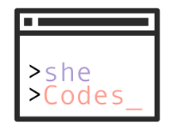

I am currently a 3rd year Computer Science major at Cal Poly Pomona.
Although I wish I could be traveling all the time and taking photos
like the ones on my home page, I spend most of the time focusing on
university coursework, learning new skills, and trying to apply them
to side projects. When I am not on the computer, I like to play classical
pieces on the piano, attend indie music concerts, and socialize over
good food.

sheCodes is the ACM-W chapter
at Cal Poly Pomona dedicated to empower women in Computer Science.
At our general meetings, we hold discussions about issues
surrounding women in Computer Science, invite engineers from
companies such as Microsoft, Trulia, and Airbnb to speak, and hold workshops
ranging from various technologies to technical interview preparations.
Aside from general meetings, we have other programs such as a
mentorship program - where lower division students are paired with
upper division students for guidance in course studies and career path,
as well as community outreach - where through Google's igniteCS, we invite girls from local middle
and high schools to our campus to teach them what computer science is,
hold hands-on workshops about hardware and Python, and work with them
to build a banana piano with Raspberry Pi.
At Canon, I helped with many QA processes, such as maintaining test matrices,
reporting bug issues, and creating test scripts. I was able to contribute to
several exciting projects such as
Enterprise Imaging Platform (a platform that automates business processes e.g. procurement)
and a Canon BioMedical device for DNA analysis.
Languages and Technologies used: Java, C#, Ruby, Selenium WebDriver,
WATIR, Ranorex, Git, JIRA, Jama, Agile, Scrum, TCP/IP